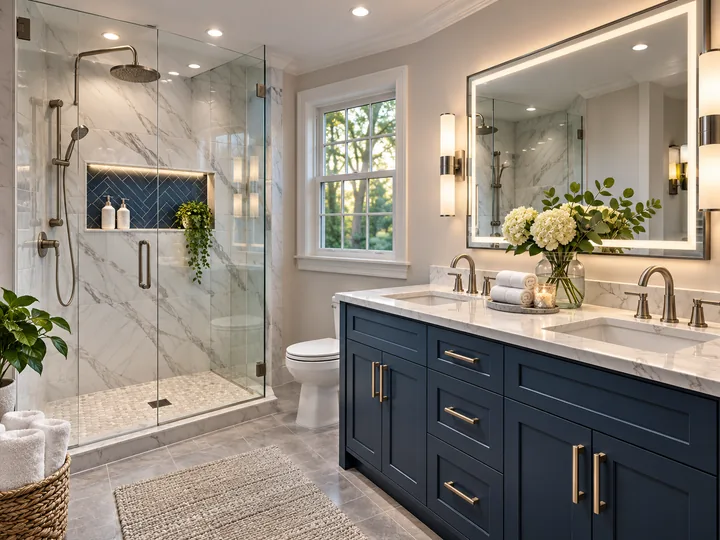

Home remodeling in Rockville, MD.
Blue Hammer Remodeling is based in Olney and plans kitchens, bathrooms and lower levels for homes in Rockville 20850. Start by deciding how much should change. A room can be renewed in its current layout or rebuilt around a new one, and the two are very different projects.

Which permit office covers a Rockville address
A Rockville mailing address is not always inside the City of Rockville. The City’s address finder shows which side of the line a house is on.
- Inside city limits. The City of Rockville requires permits before certain work, such as electrical, plumbing, mechanical or structural work. Montgomery County lists Rockville as “City permit only.”
- Outside city limits. The County’s Department of Permitting Services issues the building permit, and plumbing and gas go through WSSC Water.
- Historic properties in the City. Exterior alterations to a locally designated property are reviewed by the City’s Historic District Commission.
A smaller and a larger scope for each room
The smaller scope keeps walls and pipes where they are. The larger one moves them, and that is where most of the added cost comes from.
| Service | Smaller scope | Larger scope |
|---|---|---|
| Kitchen remodeling | Same layout. New cabinets, counters, backsplash, lighting and appliances. The cost follows the cabinet line and the counter material. | New layout. The sink, range or island moves and a wall may open. Adds plumbing, gas and electrical runs, new flooring and any structural design. |
| Bathroom remodeling | Fixtures stay in place. New tile, vanity and fixtures, with new lighting and an exhaust fan. The cost follows the tile and the vanity. | Fixtures move or the room grows. Adds new drain and supply lines, a rebuilt and waterproofed shower, and sometimes a reframed wall. |
| Basement finishing | One open room. Framing, insulation, lighting, flooring and built-in storage. | Separate rooms with a bathroom or a wet bar. Adds plumbing, doors, more wiring, and heating and cooling for each room. |
Either way, a written scope based on your drawings and selections turns the choices into a price. The steps are on the process page.
We also take on small repairs around the house. Ask about a small repair
Questions that settle the plan, room by room

In the kitchen
If the kitchen is a galley, the choice is between better storage in the same two runs and opening one side for a peninsula. If there is room for an island, the clearances around it set its size. If the range moves, its gas or electrical line and the hood duct move with it.
In the bathroom
If two people share the bath, a double vanity and a larger shower compete for the same wall, so decide which gets used more. If the floor is cold underfoot, electric floor heat is planned before the tile goes down. If the mirror stays fogged after a shower, the exhaust fan and its duct are checked.
On the lower level
If the space will be a family room, lighting and sound control come first. If it will hold a home office, daylight and a door matter more. If the furnace, water heater or laundry sits in the middle, the rooms are laid out around access to them.
Why the address comes first in Rockville
In Rockville the address tells us which permit office covers the house. Send it with the room you want to change and whether you lean toward the smaller or the larger scope. The consultation covers priorities, a budget range and timing.
Schedule a ConsultationRockville remodeling questions
See all service areasWhat do you look at on a first visit to the house?
The measured room and what feeds it: the water and drain lines, the gas line if there is one, the electrical panel and the ductwork. Those show which changes are simple and which ones add work. Walls that might carry load are noted for an on-site structural assessment.
Island or peninsula: how is that decided?
By the clear space left around it. An island needs a walkway on every side, so it suits a wider room. A peninsula gives similar counter and seating space where the room is narrower, because one end is attached. A measured drawing settles it.
What is decided first in a bathroom remodel?
Whether the toilet, shower and sink stay where they are. Keeping them in place is the smaller project. After that come the shower or tub, the waterproofing and ventilation, and then tile, vanity and lighting.
What has to be checked before a basement is finished?
Moisture, ceiling height, and where the mechanical equipment and the main drain sit. Any sign of water is dealt with before framing. The position of the drain decides where a bathroom can go.
What should I send with a consultation request?
The full project address, the room, and a short list of what is not working today. Photos help. If you have a budget range or a target season for the work, include them.
Who issues the permit for a remodel in Rockville, MD?
It depends on the address. The City says you may have a Rockville mailing address but not live within the city limits. Inside them, the City of Rockville issues the permits. Outside them, Montgomery County’s Department of Permitting Services issues the building permit and refers plumbing to WSSC Water.
Schedule a consultation
Tell us the room, your timing and your ZIP code. We review each request and reply about the next step.
- Start with your priorities, budget range and timing
- Talk through scope, design direction and permits
- Confirm your home is inside our service area